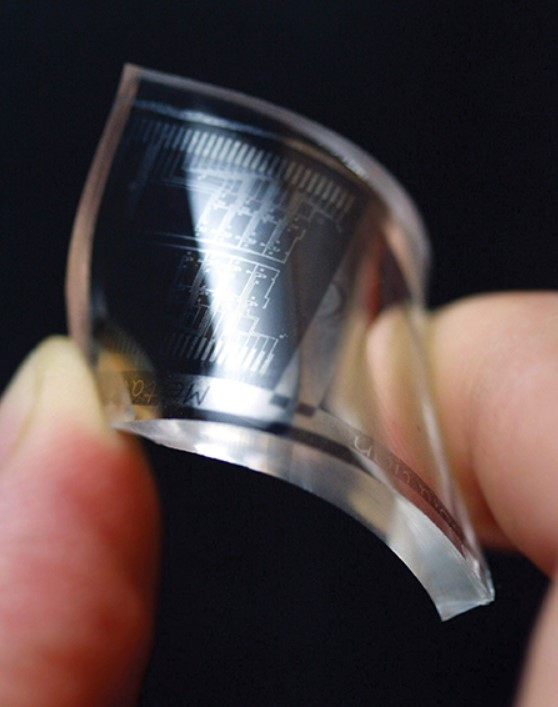

그래핀, 세계 최초로 무결점 제작 성공
기초과학연구원(IBS) 연구진이 세계 최초로 접힘과 적층이 없는 무결점 그래핀을 제작하는 데 성공했다.
기초과학연구원(IBS) 연구진이 세계 최초로 접힘과 적층이 없는 무결점 그래핀을 제작하는 데 성공했다.

국내 연구진이 기존의 투명한 전도성 플라스틱보다 투명도가 10배가량 높은 새로운 분자구조의 투명한 전도성 고분자 소재를 개발했다.
미세먼지에 많이 노출될수록 증상 없는 뇌경색 등의 뇌혈관질환이 발생할 위험이 높아진다는 사실이 MRI 분석을 통해 처음으로 확인됐다.
달걀 흰자위에 약품을 넣은 후 가열해 220㎏의 무게를 견디는 젤 형태의 신소재로 가공하는 기술이 개발됐다.
쌍둥이의 배아는 지난 1992년 4월 22일에 냉동됐으며, 이 세상에 태어난 아이의 배아 중 가장 오랫동안 냉동 보관된 것으로 추정된다고 CNN은 전했다.
아르테미스 1호는 미국 플로리다주 케네디 우주센터의 발사 단지 39B에서 하늘을 향해 힘차게 날아올랐다. 50년 만에 마침내 인류의 달 탐사가 다시 시작되었다.
분석 결과, 글로벌 공급망을 도입하면 미국 240억 달러, 독일 70억 달러, 중국 360억 달러 등 3개 국가에서만 총 670억 달러(약 92조9,491억 원)의 비용을 절감할 수 있는 것으로 나타났다.

성냥개비 모양의 나노 물질이 스스로 조립하며 형상을 만드는 기술이 개발됐다.
지난겨울 꿀벌 집단실종·폐사 원인 가운데 하나가 가을 극심한 기온변화라는 분석이 나왔다.
영화처럼 타인 꿈의 서사를 조작할 수는 없지만, 악몽으로 인한 두려움을 줄여줄 수 있는 새로운 기술이 개발됐다.
최대 몸길이 약 30ｍ로 지구상에 현존하는 가장 큰 동물로 알려진 대왕 고래가 하루에 미세플라스틱을 최대 1천만 조각 섭취한다는 연구 결과가 나왔다.
독일 막스플랑크 진화인류학연구소 연구진은 러시아 남부 시베리아 지역 동굴에서 약 5만 4,000년 전 살았을 것으로 추정되는 네안데르탈인 13명의 화석을 분석, 발표했다.
한국해양과학기술원은 해양 원천 소재를 발견하고, 3년여간 연구를 통해 어류 질병을 개선하고 면역력과 생존율을 높일 수 있는 활용법을 확인했다고 밝혔다.
영국 에든버러 대학 의대 심혈관 과학 센터의 한나 코스텔로 교수 연구팀이 생쥐 실험을 통해 이 같은 사실을 밝혀냈다.
연구팀은 머리카락 두께 1천분의 1 크기에 불과한 초박형 평면 광학소자인 메타표면으로 센서를 만들어 초소형 센서를 구현했다. 메타표면을 이용하면 라이다 시야각을 대폭 넓힐 수 있고 물체를 입체적으로 인식할 수 있다.
DART 팀의 과학자들에 따르면, 겨우 자판기 크기만 한 탐사선이 폭이 160m 정도 되는 소행성 디모르포스의 궤도를 매우 성공적으로 변경시켰음이 확인되었다. 위 충돌은 인류가 우주선을 소행성에 충돌시켜서 처음으로 궤도를 바꾼 실험으로 기록되었다.
이번 제임스 웹의 해왕성의 사진은 한눈에 보기에도 매우 선명한 고리가 눈에 띈다. 특히, 30여 년 만에 처음으로 행성의 고리에 초점을 맞춘 사진으로 크게 화제가 되었다.
한국연구재단은 한양대 한태희 교수 연구팀이 전기전도도를 획기적으로 높인 ‘맥신' 섬유를 개발했다고 7일 밝혔다. 맥신은 티타늄과 탄소 원자 등으로 이뤄진 얇은 판 모양의 2차원 물질이다.